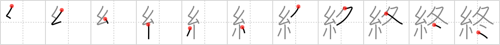

終
← →
end

Reading:
On-Yomi: シュウ — Kun-Yomi: お.わる、-お.わる、おわ.る、お.える、つい、つい.に
Heisig story:
Thread . . . winter.
Koohii stories:
1) [shaydwyrm] 17-7-2007(216): This winter is so cold that spiderman's web gets brittle! Could this be the end of spiderman?
2) [mantixen] 8-7-2009(105): Spider-Man can't wait for winter to end. Going outside in spandex isn't exactly toasty.
3) [raulir] 9-12-2006(66): The thread of life begins with the spring and ends with the winter.
4) [mattimus] 20-10-2009(24): The final issue of Spiderman: "Unable to afford the heating bill, Spiderman died that winter. The end.".
5) [kodama] 17-10-2007(24): Winter spells the end of every spider's life.